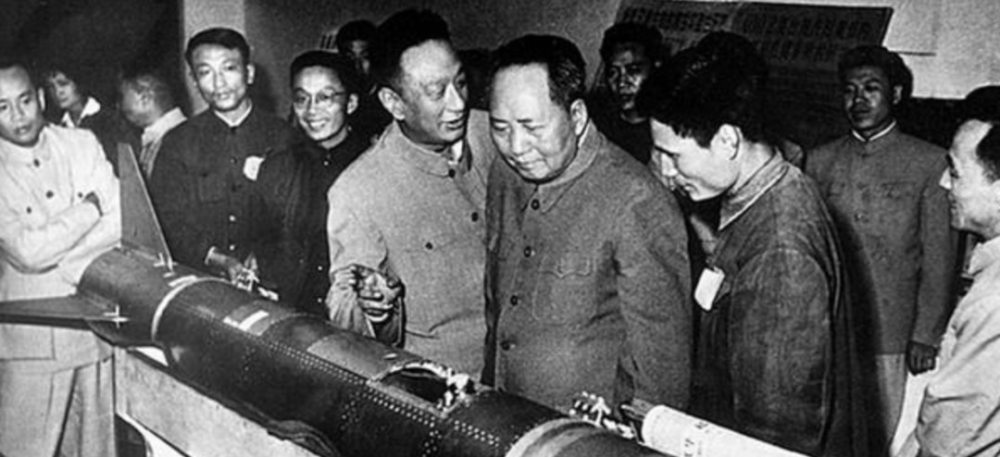
领袖决断
1956年，毛泽东作出历史性战略决策，中国必须拥有原子武器。
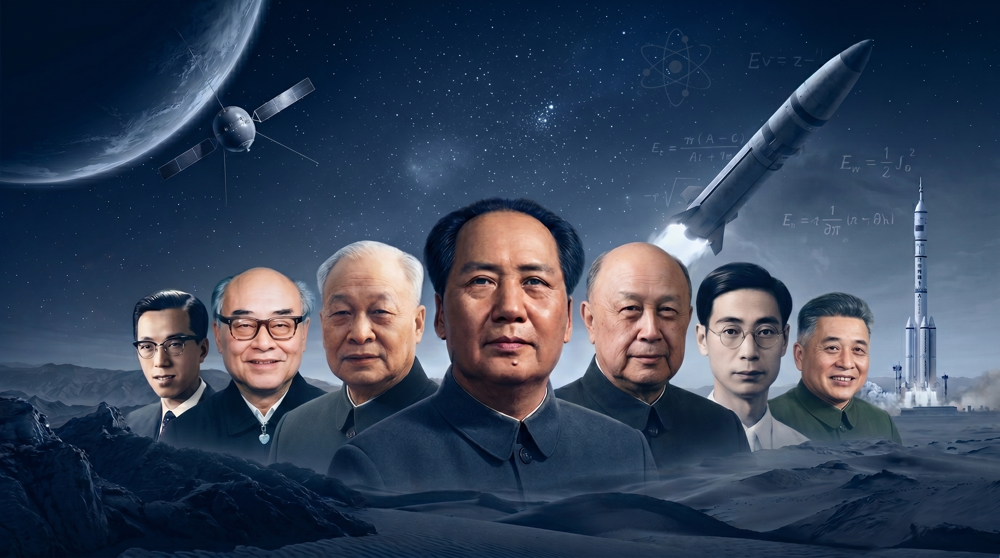
"我们不但要有更多的飞机和大炮，而且还要有原子弹。
—— 毛泽东《论十大关系》（1956年4月25日）
在今天的世界上，我们要不受人家欺负，就不能没有这个东西。"

1956年，毛泽东作出历史性战略决策，中国必须拥有原子武器。
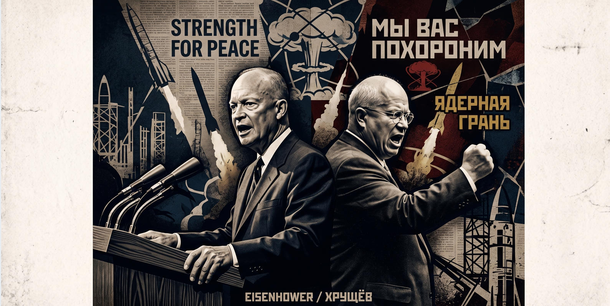
1950年代，核大国对中国实施封锁与威胁，形势刻不容缓。
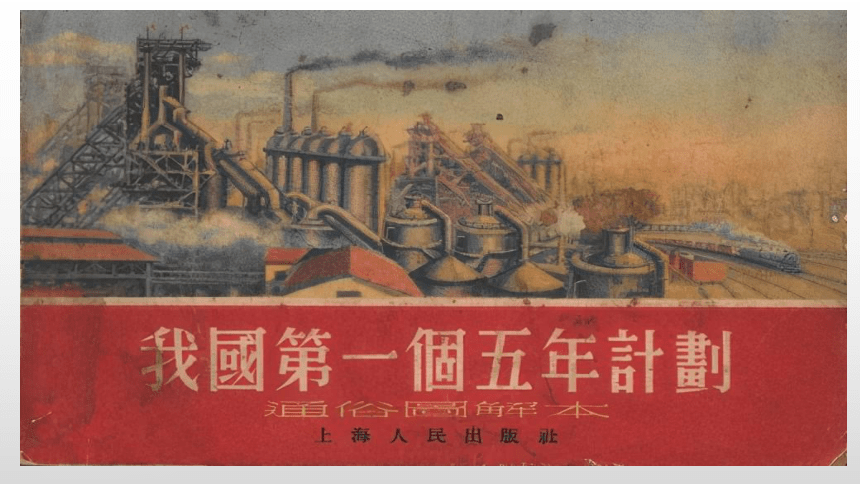
新中国工业基础薄弱，苏联撤援后只能靠自力更生。
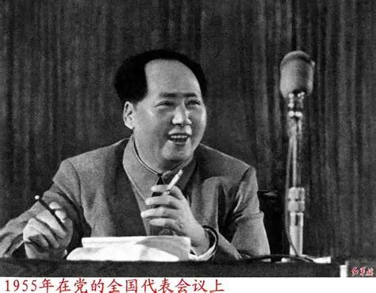
党中央决定研制原子弹，"596工程"正式立项。
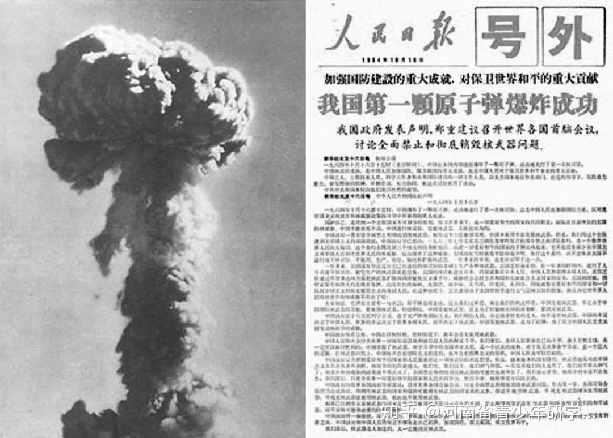
中国第一颗原子弹在罗布泊爆炸成功，举国沸腾。
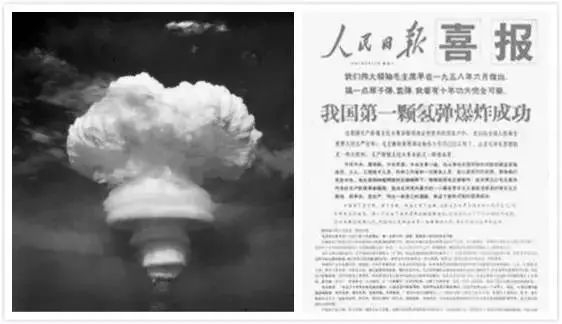
中国第一颗氢弹爆炸成功，用时仅2年8个月，创世界纪录。
中国第一颗人造卫星成功发射，《东方红》响彻太空。
视频剪辑中，敬请期待
请将 assets/videos/journey.mp4 上传至仓库
毛泽东在《论十大关系》中明确提出"以苏为鉴"，强调不能照搬苏联模式；在"两弹一星"研制中，党中央确立了"自力更生为主，争取外援为辅"的方针。这是对适合中国国情的社会主义建设道路的独立探索，是"两弹一星"精神与社会主义建设理论最为核心的连接点。
《论十大关系》的基本方针是"把国内外一切积极的因素……全部调动起来"。《关于正确处理人民内部矛盾的问题》进一步提出要统筹兼顾，正确处理国家、集体和个人的利益关系。在"两弹一星"工程中，全国上下、数以万计的人员被动员起来，将制度优势与个人奉献完美统一，形成了举国同心办大事的壮阔局面。
《关于正确处理人民内部矛盾的问题》指出，社会主义社会的矛盾大量表现为人民内部矛盾，要用民主的、说服教育的方法解决，并提出了"为人民服务"的根本价值立场。"两弹一星"元勋们将国家利益置于个人利益之上，以隐姓埋名的奉献精神，生动诠释了这一价值导向的崇高含义。
党对社会主义建设道路的初步探索，既奠定了独立的工业体系和国防安全的物质基础，也积累了宝贵的精神财富。"两弹一星"的成功不仅打破了核垄断、捍卫了国家安全，更铸就了"两弹一星"精神，为中国特色社会主义事业提供了理论准备、物质基础和宝贵经验。
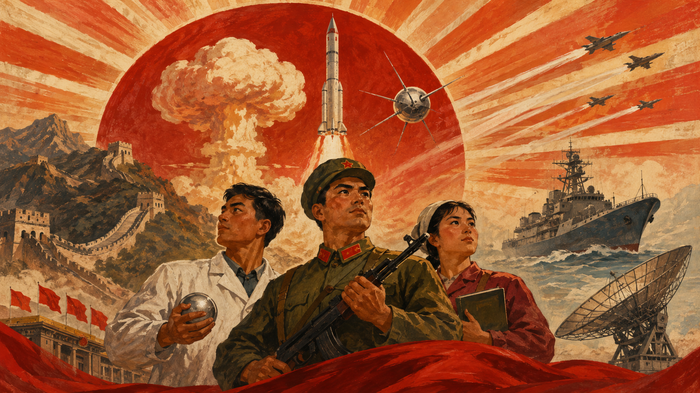
打破核垄断，结束超级大国核讹诈时代，奠定中国大国地位。
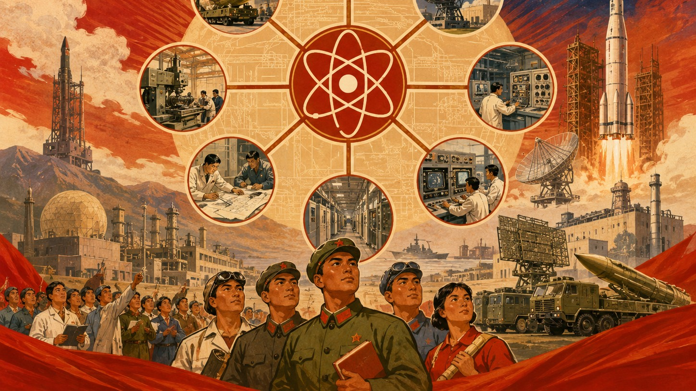
建立起独立完整的国防科技工业体系，为后来的航天事业打下坚实基础。
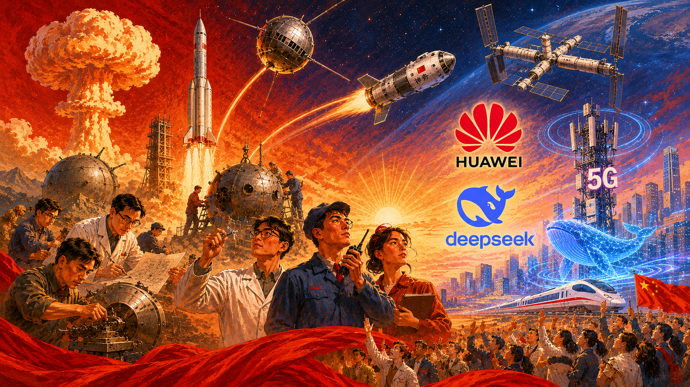
"两弹一星"精神写入中国共产党人精神谱系，激励一代代中国人奋勇前行。
1999年9月18日，党中央、国务院、中央军委隆重表彰为研制"两弹一星"作出突出贡献的科技专家，授予23位科学家"两弹一星功勋奖章"。
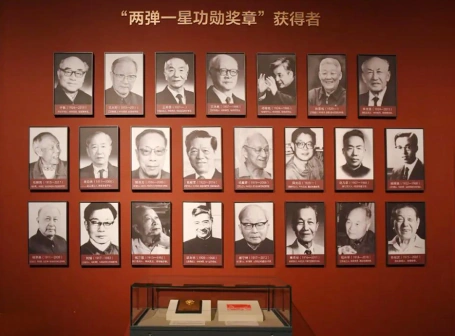
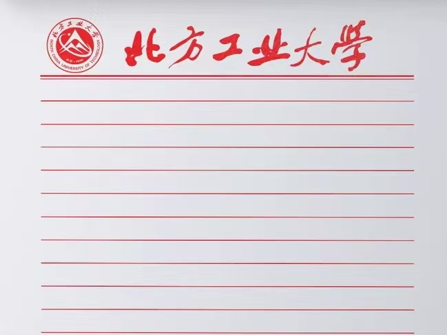
他们隐姓埋名，是为了让我们挺直腰杆。
今日山河锦绣，如您所愿。